A Astronomia é a ciência que trata do estudo dos Astros. Esse estudo, nos dias de hoje, é feito de duas maneiras:
a) Análise e medição da direção de onde provem a luz. Este estudo é feito pela Astrometria e pela Mecânica Celeste.
b) Análise e medição da quantidade e tipo de luz recebida. O estudo dessa parte é feito pela Astrofísica.
Observando o céu em uma noite estrelada, não podemos evitar a impressão de que estamos no meio de uma grande esfera incrustada de estrelas. Isso inspirou, nos antigos gregos, a idéia do céu como uma Esfera Celeste.
Quando contemplamos o céu em uma noite de condições favoráveis, podemos observar que todas as estrelas em conjunto se deslocam ao redor de um ponto. Constatamos também que o Sol parece deslocar-se no mesmo sentido das estrelas.
O ponto onde o Sol aparece sempre é o LESTE, sobe até atingir a posição mais elevada para em seguida atingir o horizonte oposto o OESTE.
Se nos posicionarmos de tal modo que nossa direita aponte para o Leste, à nossa esquerda teremos o Oeste, à frente o Norte e às costas o Sul. Se
colocarmos uma haste perpendicular ao solo, o seu prolongamento para cima perfurará o céu no chamado ZENITE o prolongamento no sentido oposto do
outro lado do globo, teremos o ponto chamado NADIR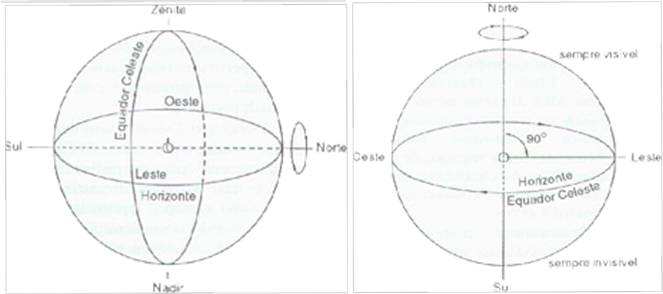
Da observação a olho nu podemos constatar três fatos:
1 - A estrela desloca-se do Leste paralelamente no céu, em direção ao lado Oeste onde desaparece. Se a observação for na região acima do
horizonte Sul, iremos notar que elas parecem mover-se ao redor de um ponto: o pólo celeste Sul. Na realidade esse movimento é aparente, a Terra ao girar
em torno de seu eixo – movimento de rotação, transmite a impressão de que todas as estrelas, incluindo o Sol e a Lua estão girando continuamente em torno
da Terra. Um observador nos pólos terrestres, Norte ou Sul, veria as estrelas girando paralelamente no horizonte, sem nunca nascerem ou se porem. Um
observador localizado no equador veria as estrelas nascerem ou se porem perpendicularmente ao horizonte, tal deslocamento é o movimento de rotação,
movimento aparente diurno provocado pela rotação terrestre em torno de seu eixo.
2 - Observando sempre de um mesmo lugar podemos ver que uma mesma estrela aparece e desaparece todos os dias em um mesmo ponto no horizonte,
no entanto, podemos notar que de um dia para outro, essa estrela aparece e desaparece quatro minutos mais cedo. Em um mês esse avanço será de duas horas :
30 dias x 4 minutos = 120 minutos ou seja 2 horas. Assim o céu de 1º de agosto às 22 horas será o mesmo de 1º setembro às 20 horas. Por esse motivo veremos que
o céu terá seu aspecto modificado para um observador, algumas estrelas deixarão de ser vistas outras aparecerão. Num intervalo de seis meses, observando o céu
numa mesma hora e local, todas as constelações visíveis serão diferentes, no final de um ano: 365 dias x 4 minutos = 1460 minutos = 24,33 horas teremos
aproximadamente 24 horas, ou seja, estaremos de volta na posição inicial. Esse é o movimento aparente anual causado pelo movimento da Terra ao redor do Sol em
um ano: movimento de translação . O caminho percorrido pela Terra ao redor do Sol a uma velocidade de 29,7 km/s, ou 2.596.080 km/dia que vai mudando diariamente
nosso ponto de observação no espaço.
3 - Se a observação das constelações for junto ao horizonte as veremos aumentadas, com as estrelas entre si mais afastadas, ampliando e
deformando o desenho, isto também ocorre com o Sol e a Lua quando próximos do horizonte. Ao passar pelo zênite as constelações parecem menores e as estrelas
parecem menores e mais próximas entre si. Embora o Sol, a Lua, e a maioria dos astros, aqui na nossa latitude, nasçam e ocaso, existem astros que nunca
nascem nem se põem, permanecendo sempre acima do horizonte. Se pudéssemos observá-los durante 24 horas, os veríamos descrevendo uma circunferência completa
no céu, no sentido horário. Esses astros são chamados circumpolares. O centro da circunferência descrita por eles coincide com o Pólo Sul Celeste. Para os
habitantes do hemisfério norte, as estrelas circumpolares descrevem uma circunferência em torno do Pólo Norte Celeste. Mas as estrelas que são circumpolares
lá não as mesmas estrelas que são circumpolares aqui, pois o fato de uma estrela ser circumpolar ou não depende da latitude do lugar de observação.
Os antigos gregos definiram alguns planos e pontos na esfera celeste, que são úteis para a determinação da posição dos astros no céu.
São eles:
Zênite: ponto no qual a vertical do lugar (perpendicular ao horizonte) intercepta a esfera celeste, acima da cabeça do observador.
Nadir: ponto diametralmente oposto ao Zênite.
Equador Celeste: círculo máximo em que o prolongamento do equador da Terra intercepta a esfera celeste.
Pólo Celeste Norte: ponto em que o prolongamento do eixo de rotação da Terra intercepta a esfera celeste, no hemisfério norte.
Pólo Celeste Sul: ponto em que o prolongamento do eixo de rotação da Terra intercepta a esfera celeste, no hemisfério sul.
Círculo vertical: qualquer semicírculo máximo da esfera celeste contendo a vertical do lugar. Os círculos verticais começam no Zênite e terminam no.
Ponto Geográfico Norte: ponto em que o círculo vertical que passa pelo Pólo Norte Celeste intercepta o Horizonte. É também chamado Ponto
Cardeal Norte.
Ponto Geográfico Sul: também chamado Ponto Cardeal Sul, é o ponto em que o círculo vertical que passa pelo Pólo Sul Celeste intercepta o Horizonte.
As linhas sobre o Horizonte que liga os pontos cardeais Norte e Sul chamam-se linha Norte-Sul, ou meridiana. A linha Leste-Oeste é obtida traçando-se,
sobre o Horizonte, a perpendicular à meridiana.
Círculo de altura: qualquer círculo da esfera celeste paralelo ao Horizonte. É também chamado almocântara, ou paralelo de altura.
Círculo horário: qualquer semicírculo máximo da esfera celeste que contém os dois pólos celestes. É também chamado meridiano.
O meridiano que passa pelo Zênite se chama Meridiano Local.
Paralelo: qualquer círculo da esfera celeste paralelo ao equador celeste. É também chamado círculo diurno.
 Um dos objetivos da Astrometria é a determinação de posições dos astros. Para tanto, ao longo do tempo foi sendo desenvolvido,
auxiliado pela evolução, novos sistemas que pudessem determinar com mais precisão e clareza as posições dos astros estudados. Estes astros que se
encontram em diferentes distâncias e posições da Terra, assim para definir a posição de um astro na Esfera Celeste necessitamos simplesmente determinar
a sua posição angular sem nos preocuparmos com sua distância, portanto será necessário fornecer de cada astro apenas dois ângulos de posição. Ao todo,
até o momento, temos seis tipos de coordenadas, cada qual com sua finalidade e sua importância.
Um dos objetivos da Astrometria é a determinação de posições dos astros. Para tanto, ao longo do tempo foi sendo desenvolvido,
auxiliado pela evolução, novos sistemas que pudessem determinar com mais precisão e clareza as posições dos astros estudados. Estes astros que se
encontram em diferentes distâncias e posições da Terra, assim para definir a posição de um astro na Esfera Celeste necessitamos simplesmente determinar
a sua posição angular sem nos preocuparmos com sua distância, portanto será necessário fornecer de cada astro apenas dois ângulos de posição. Ao todo,
até o momento, temos seis tipos de coordenadas, cada qual com sua finalidade e sua importância.
COORDENADAS HORIZONTAIS LOCAIS: Nesse sistema os dois ângulos utilizados são Azimute (A) medido a partir do
norte para o leste sobre o horizonte, até a circunferência vertical que passa pelo astro cuja posição se deseja definir, o campo de definição dos
azimutes está entre 0(zero) e 360 graus. Altura (h) ângulo medido desde o plano do horizonte ao longo da circunferência vertical do astro até o astro.
Quando o astro está acima do horizonte sua altura é positiva e quando está abaixo – não visível, é negativa.
COORDENADAS GEOGRÁFICAS: O sistema de Coordenadas Geográficas admite que a Terra é esférica e que seu eixo
passa pelo centro, por esse centro traçamos um plano perpendicular ao eixo de rotação obtemos assim o Plano do Equador da Terra utilizaremos esse
plano como fundamental e o pólo norte como pólo fundamental do sistema de coordenadas. Cada semicircunferência que vai de pólo a pólo passará a se
chamar Meridiano Geográfico.
SISTEMA EQUATORIAL DE COORDENADAS: Da mesma forma que foi possível admitir um sistema de
coordenadas que permita associar a cada local da Terra um par de valores (λ,φ), podemos definir sobre a Esfera Celeste, o
 Sistema Equatorial de Coordenadas que associará o par (α,δ) a cada ponto dessa esfera. Chamaremos de Equador Celeste ao plano
que passa pelo equador terrestre e é perpendicular ao eixo de rotação da Terra ou da Esfera Celeste.
Cada uma das infinitas semicircunferências que iniciam no pólo norte celeste e terminam no pólo sul celeste recebe o nome de
Meridiano Celeste. Um desses meridianos é escolhido como meridiano de referência. A interseção desse meridiano com o equador
celeste é chamado de Ponto Vernal ou Ponto Gama (γ) ou Equinócio de Primavera Boreal (relativo ao Hemisfério Norte). O Sistema
Equatorial de Referências é definido então por: Ascensão Reta (α) é o ângulo medido sobre o Equador Celeste desde o Meridiano de
Referência, no sentido anti-horário quando visto do pólo celeste norte até o meridiano celeste que passa pelo astro em questão;
Declinação (δ) é o ângulo medido ao longo do meridiano celeste do astro desde o equador celeste até o astro.
Os astros do hemisfério norte celeste têm declinações positivas os do hemisfério sul celeste têm declinações negativas.
Sistema Equatorial de Coordenadas que associará o par (α,δ) a cada ponto dessa esfera. Chamaremos de Equador Celeste ao plano
que passa pelo equador terrestre e é perpendicular ao eixo de rotação da Terra ou da Esfera Celeste.
Cada uma das infinitas semicircunferências que iniciam no pólo norte celeste e terminam no pólo sul celeste recebe o nome de
Meridiano Celeste. Um desses meridianos é escolhido como meridiano de referência. A interseção desse meridiano com o equador
celeste é chamado de Ponto Vernal ou Ponto Gama (γ) ou Equinócio de Primavera Boreal (relativo ao Hemisfério Norte). O Sistema
Equatorial de Referências é definido então por: Ascensão Reta (α) é o ângulo medido sobre o Equador Celeste desde o Meridiano de
Referência, no sentido anti-horário quando visto do pólo celeste norte até o meridiano celeste que passa pelo astro em questão;
Declinação (δ) é o ângulo medido ao longo do meridiano celeste do astro desde o equador celeste até o astro.
Os astros do hemisfério norte celeste têm declinações positivas os do hemisfério sul celeste têm declinações negativas.
SISTEMA HORÁRIO DE COORDENADAS: O sistema de coordenadas Horizontais Locais é um
sistema fixo a Terra, de modo que tanto o Azimute quanto a Altura dos astros variam ao longo do movimento diário aparente da
Esfera Celeste. No caso do sistema de Coordenadas Equatoriais, nem a Ascensão Reta nem a Declinação variam, já que o sistema é
fixo à Esfera Celeste, será. Será definido agora um sistema híbrido de coordenadas, uma delas é fixa a Terra enquanto que a
outra é fixa à Esfera Celeste. As coordenadas que definirão a posição de um astro nesse novo sistema de coordenadas são:
Ângulo Horário (H) é o ângulo medido sobre o equador celeste desde o Meridiano Superior no sentido para o Oeste até o meridiano
celeste que passa pelo astro em estudo. Declinação (δ) tem a mesma definição dada.
Nesse sistema o ângulo horário dos astros vai crescendo conforme o tempo passa.
Será definido agora um sistema híbrido de coordenadas, uma delas é fixa a Terra enquanto que a
outra é fixa à Esfera Celeste. As coordenadas que definirão a posição de um astro nesse novo sistema de coordenadas são:
Ângulo Horário (H) é o ângulo medido sobre o equador celeste desde o Meridiano Superior no sentido para o Oeste até o meridiano
celeste que passa pelo astro em estudo. Declinação (δ) tem a mesma definição dada.
Nesse sistema o ângulo horário dos astros vai crescendo conforme o tempo passa.
MOVIMENTO ANUAL APARENTE DO SOL: O movimento diário aparente do Sol o faz movimentar-se na abóbada celeste nascendo no leste e pondo-se no oeste. O Sol muda sua posição em relação às estrelas. Como o Sol não pode ser visto simultaneamente com as estrelas, essa constatação poderá ser feita de outra forma, observar a posição que o Sol se põe diariamente. Logo depois do ocaso algumas estrelas aparecem, observamos essas estrelas e verificamos que dia após dia as estrelas dessa região vão mudando de posição, além do que após alguns dias novas estrelas vão surgindo . Isso significa que a posição do Sol vai mudando em relação às estrelas, poderemos constatar que 365 dias após a posição será novamente a mesma do início da observação. Esse intervalo de tempo passou a se chamar Ano mais especificamente Ano Trópico. Da observação diária e por longos anos do gnômon foi a de que quando a sombra ao meio dia era mínima, correspondia sempre a época mais quente do ano que passou a se chamar Início do Verão Boreal ou Solstício do Verão Boreal, quando a sombra era máxima correspondia a época mais fria, era o início do que foi definido como Inverno Boreal, ou Solstício do Inverno Boreal. Quando essa sombra coincidia com a interseção da bissetriz do ângulo formado pelas direções meridianas dizia-se que ele estava nos Equinócios, caso o inverno já estivesse passado o Equinócio seria o de Primavera também chamado Ponto Vernal ou Ponto Gama (γ), caso o verão estivesse terminado o ponto passa a se denominar Equinócio de Outono Boreal. Foi observando a sombra do gnômon que os antigos astrônomos conseguiram medir a duração do não trópico 365,242199 dias. Como a duração do ano não era um número inteiro de dias, cada povo da antiguidade procurou definir regras para que em média o ano tivesse uma duração próxima da do Ano Trópico.
SISTEMA DE COORDENADAS ECLIPTICAS: Chamamos de Eclíptica à linha que o Sol parece descrever entre as estrelas no seu movimento anual aparente. Foi verificado que essa linha cruza o equador celeste em dois pontos, os Pontos Equinociais: Ponto Gama (ou Ponto de Áries) quando passa pelo hemisfério sul para o norte e o Ponto Libra quando no sentido oposto. As coordenadas do sistema eclíptico são: Longitude Eclíptica (l) é o ângulo medido desde o Ponto Gama, sobre a Eclíptica, até o meridiano Eclíptico que passa pelo astro em questão; Latitude Eclíptica (b) é o ângulo desde a Eclíptica, medido sobre o meridiano Eclíptico que passa pelo astro em questão. O ângulo entre o plano do Equador e o plano da Eclíptica de chama Obliqüidade da Eclíptica (ε) e tem um valor aproximado de 23º 27’ 08”.
O reconhecimento das principais estrelas, não requer um conhecimento preliminar de astronomia, principalmente se o objetivo desse reconhecimento é o de satisfazer a curiosidade de saber ou de compreender também a nossa posição no universo. Esse método de reconhecimento é essencialmente baseado na memória visual, consistindo em duas etapas básicas: conhecer e memorizar algumas constelações de dimensões e formas características. Para isso devemos escolher no céu grupos de estrelas facilmente reconhecíveis e diferentes entre si para não serem confundidas e também muito bem distribuídas na abóbada celeste para permitir um reconhecimento melhor. Identificar alguns grupos de estrelas que já são conhecidas, pois desde a infância ouvimos falar delas, a partir desses grupos iniciaremos nossa caminhada.
CRUZEIRO DO SUL :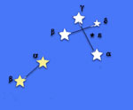 Sua forma é uma cruz e já era conhecida desde a época do descobrimento, quando foi batizada por esse nome pelo astrônomo da esquadra de Cabral, a Leste estão as estrelas Alfa e Beta do Centauro constitui-se no mais belo conjunto de estrelas do hemisfério Sul.
TOURO :
Taurus, o Touro, é uma constelação de estrelas, as mais brilhantes são: Aldebarã, a Alfa do Touro, de magnitude
aparente 0,85; Alnath, a Beta do Touro, de magnitude aparente 1,65;
e Hyadum I, a Gama do Touro, de magnitude aparente 3,63.
é uma constelação de estrelas, as mais brilhantes são: Aldebarã, a Alfa do Touro, de magnitude
aparente 0,85; Alnath, a Beta do Touro, de magnitude aparente 1,65;
e Hyadum I, a Gama do Touro, de magnitude aparente 3,63.
LIRA : Lyra, a Lira, é uma constelação do hemisfério  norte. A Constelação de Lira tem como estrela principal Vega, a Alfa Lyrae. A Constelação de Lyra não pode ser observada
muito abaixo do Equador. A estrela Vega – Alfa de Lira , é uma estrela azul é reconhecível pelo pequeno
norte. A Constelação de Lira tem como estrela principal Vega, a Alfa Lyrae. A Constelação de Lyra não pode ser observada
muito abaixo do Equador. A estrela Vega – Alfa de Lira , é uma estrela azul é reconhecível pelo pequeno
ÁGUIA :  Altair, estrela branca, situada no meio
de três estrelas alinhadas e eqüidistantes. Aquila é de origem muito antiga e representa a águia que acompanhava Júpiter, o líder dos deuses
na mitologia romana.Situa-se a Norte do Sagitário e a relativa proximidade das constelações da Lira e do Cisne ajuda na sua
localização de uma forma geral.
Altair, estrela branca, situada no meio
de três estrelas alinhadas e eqüidistantes. Aquila é de origem muito antiga e representa a águia que acompanhava Júpiter, o líder dos deuses
na mitologia romana.Situa-se a Norte do Sagitário e a relativa proximidade das constelações da Lira e do Cisne ajuda na sua
localização de uma forma geral.
COROA :Corona Borealis,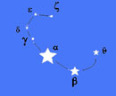 a Coroa do Norte ou Boreal, é uma constelação do hemisfério celestial norte. Grupo de sete estrelas de brilho modesto na forma de uma coroa ou semicírculo. Possui uma estrela muito brilhante Margarita ou Alfeca, comumente chamada de Pérola
ÓRION : Uma das mais notáveis  e belas constelações do céu possui as Três Marias nome conhecido no Brasil,
na Europa o grupo das três estrelas chama-se Os reis, que vai permitir localizar essa constelação. Suas estrelas mais brilhantes
são
Betelguese (Alfa de Órion) e Rigel (Beta de Órion).
e belas constelações do céu possui as Três Marias nome conhecido no Brasil,
na Europa o grupo das três estrelas chama-se Os reis, que vai permitir localizar essa constelação. Suas estrelas mais brilhantes
são
Betelguese (Alfa de Órion) e Rigel (Beta de Órion).
LEÃO :Leo, o Leão, é uma constelação do zodíaco.  O genitivo, usado para formar nomes de estrelas,
é Leonis. As constelações vizinhas, segundo as delineações contemporâneas, são a Ursa Maior, o Leão Menor, o Caranguejo, a Hidra, o Sextante, a
Taça, a Virgem e a Cabeleira de Berenice.
O genitivo, usado para formar nomes de estrelas,
é Leonis. As constelações vizinhas, segundo as delineações contemporâneas, são a Ursa Maior, o Leão Menor, o Caranguejo, a Hidra, o Sextante, a
Taça, a Virgem e a Cabeleira de Berenice.
COCHEIRO :Capela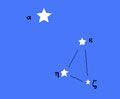 a estrela amarela é reconhecida pela proximidade de três pequenas cabras que formam um triângulo isósceles. Alpha Aurigae, também α Aurigae, em português Alfa do Cocheiro ou, ainda, 13 Aurigae e Capela, é a estrela mais brilhante da constelação do Cocheiro e a sexta mais brilhante do céu
ESCORPIÃO :Scorpius, , 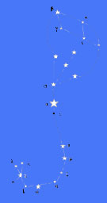 o Escorpião é uma constelação do zodíaco. O genitivo, usado para formar nomes de estrelas, é Scorpii. A constelação de Escorpião é facilmente visualizada nas noites de inverno no hemisfério sul; e encontra-se a maior parte do tempo ofuscada pelo Sol nos meses de verão nesse hemisfério.
CASSIOPEIA :A constelação 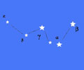 aparecerá com um W ou um M de pernas muito afastadas, dependendo da hora da observação. Cassiopeia é uma constelação do hemisfério celestial norte. O genitivo, usado para formar nomes de estrelas, é Cassiopeiae. As constelações vizinhas, segundo a padronização atual, são a Girafa, o Cefeu, o Lagarto, a Andrômeda e o Perseu. No Brasil também é conhecida pelos nomes nativos Tamaquaré e Taquaré.
As estrelas visíveis mostram bruscas alterações de brilho e cor, essas mudanças, incessantes e repentinas são chamadas de cintilação, são provocadas pelas mudanças contínuas nas diferentes camadas de nossa atmosfera , em virtude de apresentarem diferentes níveis de temperatura densidade e umidade, os raios luminosos vindos das estrelas sofrem refrações desiguais nas diferentes cores. A cintilação estelar é menos intensa quando a atmosfera é mais calma e o caminho percorrido pelos raios é mais curto. Como consequência, no horizonte a luz da estrela atravessa uma camada mais espessa da atmosfera do que no zênite e cintilação é maior quando a estrela se encontra baixa no horizonte. As estrelas próximas ao zênite só cintilam nos dias de muito vento, pela mesma razão a cintilação é maior ao nível do mar do que no alto da montanha. As estrelas brancas como a Sírius cintilam mais que as vermelhas como a Antares. Percebe-se uma cintilação maior nas estrelas brancas e azuis, depois nas amarelas, e mais reduzidas nas vermelhas. Em resumo a cintilação é maior quando a atmosfera está mais carregada de umidade que num período de seca.
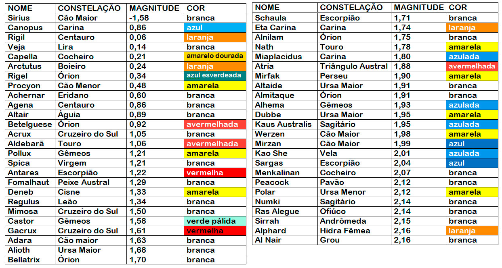
Os planetas apresentam luz fixa, sem cintilação, podendo eventualmente apresentar cintilação em circunstâncias
especiais, quando a atmosfera está muito agitada, ou o planeta encontra-se muito baixo no horizonte. A ausência de cintilação deve-se ao
fato da imagem do planeta ser constituída de um pequeno disco de diâmetro aparente sensível, ao contrário da estrela que, se apresenta
como um ponto luminoso, mesmo através do telescópio.
Os planetas não se afastam muito da eclíptica, trajetória aparente do Sol, devem ser procurados nas treze constelações eclípticas a de
Ofiúco e as demais Já citadas.
Os planetas interiores – Mercúrio e Vênus, por terem suas órbitas no interior da órbita da Terra, se afastam muito pouco
do Sol. Eles nascem e se põem pouco tempo antes e depois do Sol.
Os planetas facilmente visíveis a olho nu – Marte Júpiter e Saturno, os pouco visíveis Urano e Netuno, o único visível
através de fotografia Plutão, são todos planetas superiores, por terem suas órbitas exteriores à órbita da Terra.
O acompanhamento sistemático de um planeta como Marte, podemos ver que a partir de um determinado momento ele retrocede para logo em
seguida retornar ao rumo normal, realizando uma laçada no céu.
Os planetas mais brilhantes são Vênus e Júpiter. Vênus é doze vezes mais brilhante que a estrela Sírius é o primeiro astro a aparecer no
crepúsculo da tarde e o último a desaparecer na aurora, durante dez meses
é visível como estrela da manhã do lado Leste (nascente), e depois durante outros dez meses como estrela da tarde, do lado Leste (poente).
Júpiter o segundo planeta mais brilhante é reconhecível pela sua coloração branco prateada e pelo seu brilho, as vezes superior a Sírius.
Os outros planetas apresentam um brilho ao das estrelas conhecidas – Marte tem um brilho entre Pollux e Sírius, Mercúrio varia entre as estrelas
Acrux e Canopus. Saturno entre as estrelas Betelguese e Alfa do Centauro.
Marte é um dos planetas mais fáceis de serem reconhecidos, em face de sua coloração avermelhada, pois só existem no céu três estrelas
vermelhas de brilho comparável: Antares, Betelguese e Aldebarã. Saturno de brilho branco pálido será fácil localizá-lo se conhecermos sua
posição no céu, ou melhor, em que constelação está situada. Seu contorno alongado, em virtude dos anéis. Mercúrio sempre próximo do Sol
será bem difícil observá-lo, principalmente por se encontrar próximo do horizonte, região do céu quase sempre com nuvens.
A cor dos planetas é uma propriedade de suas superfícies e atmosferas e sobre as radiações de origem solar que refletem, a capacidade que
um astro tem de refletir a luz que recebe do Sol chama-se Albedo. Pode-se determinar o albedo de um astro quando se possui um meio que
permita comparar um fotômetro, a luz refletida pelo astro com a recebida pelo Sol. O albedo da Lua é 0,073, significando que nosso
satélite absorve 92,7% da energia que recebe do Sol, no domínio das radiações visíveis.
MERCÚRIO: de cor amarelada, foi registrada pela primeira vez por Platão, confirmada mais tarde pelo norte americano G.W.
Rithey. Pela sonda sua imagem é cinza, como a da Lua, talvez pelo vulcanismo.
VÊNUS: cor branca, conhecido desde a antiguidade babilônica. Pelas imagens da sonda é amarelo.
MARTE: de cor vermelha que foi associada ao sangue, em conseqüência ao deus da guerra. As sondas espaciais mostram um solo
avermelhado em seus desertos.
JÚPITER: de cor branca prateada a olho nu, é visto através de lunetas espaciais como um astro encarnado.
SATURNO: de cor branco-pálido, com brilho de tonalidade plúmbea que permite distingui-lo do prateado de Júpiter.
As imagens de seu globo através de lunetas, nos mostram uma coloração ligeiramente esverdeada.
URANO: através das lunetas apresenta-se como um disco esverdeado, pela sonda mostra uma cor de chumbo.
NETUNO: quando observado por fotografias apresenta um pequeno disco esverdeado.
Os povos antigos criaram uma cartografia ordenada do céu com a finalidade de orientá-los na agricultura, o
aparecimento de determinada constelação no céu em uma determinada época poderia indicar o tempo certo do plantio, da colheita, das chuvas,
etc., e também em suas atividades de navegação. As mais antigas observações estão entre os povos da Mesopotâmia, mais especificamente os
babilônios, uma civilização de mais de quatro mil anos, que através de suas observações foram se aperfeiçoando até que se chegou a um
elaborado calendário, alguns séculos antes de Cristo, para guiarem-se em suas atividades. Nos primeiros zodíacos temos a constelação de
Touro uma vez que o Equinócio da Primavera localizava-se nessa constelação. Em virtude do movimento de precessão o equinócio se desloca
em todos os signos num período de 26 mil anos. A partir de 2.150 a.C. tem lugar no signo de Áries e desde o primeiro século d.C.
encontra-se no signo de Peixes. Entre os persas o céu era dividido em quatro partes pelas quatro estrelas reais –

A associação do nome das constelações à mitologia era uma maneira de permitir a transmissão oral da descrição do céu; o culto aos fenômenos naturais, inexplicáveis pelo conhecimento da época, deu origem a ligações místicas, segue-se alguns dados com o nome das constelações e seu significado mitológico bem como sua origem.
AQUARIUS (Aguadeiro ou Aquário) :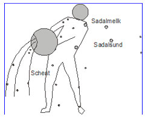 Este asterismo está associado às águas, pois o Sol passava por esta região do céu na estação das chuvas nos meses de fevereiro. Nos mais antigos monumentos da Babilônia a representação dessa constelação era de um homem entornando a água de um vaso sobre um pequeno peixe, o Peixe Austral. Para os egípcios as estrelas Alfa(α) e Omicron(σ) de Aquário indicavam o início da semeadura, que vinha após a inundação do Nilo. A estrela Formalhaut situada no sul dessa constelação era uma das quatro estrelas reais dos persas e indicavam em 4000 a.C., o Solstício de inverno. O Aquário é associado a Hebe ou Ganimedes que derramava suas taças com o néctar da eterna juventude e da imortalidade aos deuses do Olimpo.
ÁRIES (Carneiro) : 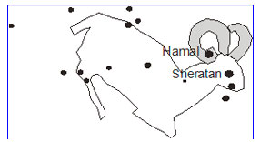Foram os babilônios que adotaram esse signo para marcar o início do ano, pois em 2500 a C, o equinócio da primavera encontrava-se no meio das três estrelas que formam a cabeça do carneiro. A mitologia nos diz que Frixo e Hebe eram filhas de Atamas rei de Tessália, que passava nessa época, por uma crise de fome e seca, para aplacar a ira dos deuses a madrasta exigiu que as irmãs fossem sacrificadas. Para salvá-las o deus Mercúrio enviou um carneiro que as levou em fuga até Cólquida.
CANCER(Caranguejo) :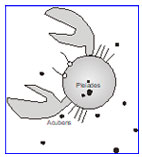 Devido a sua origem duvidosa, alguns autores associam-na ao movimento do Sol no solstício de verão com o modo de andar do caranguejo. Os caldeus já a conheciam. Os egípcios a representavam no Zodíaco o Denderah como um caranguejo redondo. Na mitologia grega o caranguejo teria sido o animal que mordeu os pés de Hércules quando ele combatia a hidra de Lerna Para homenagear esse caranguejo Juno, colocou-o no céu.
CAPRICORNUS(Capricórnio) :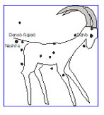Denominação dada pelos caldeus e babilônios, talvez em associação com as cabras que desciam das montanhas com a chegada do inverno. O Sol atinge esse signo no seu maior afastamento no pólo Norte. Há 2000 anos o Sol atingia Capricórnio no equinócio de inverno e Câncer no verão, daí o nome dado pelos geógrafos à linha que passa a 23 graus ao Sul do equador, de Trópico de Capricórnio e a que passa a 23 graus Norte do equador de Trópico de Câncer.
GEMINI(Gêmeos) : O Sol encontra-se nessa região do céu
no período posterior à inundação do Nilo, precedendo à época da germinação e anunciando a fecundidade, foram encontradas inscrições no
túmulo de Ramsés VI que mostram dois brotos de plantas no lugar dos gêmeos. Castor e Pollux eram filhos gêmeos de Leda esposa de
Tíndaro rei de Esparta, e de Júpiter, que se disfarçava em cisne para encontrá-la. Foram os gêmeos que libertaram sua irmã Helena,
durante a guerra de Tróia. Eram grandes amigos. Júpiter recompensa esse amor fraterno e os coloca no céu como os gêmeos.
Na antiguidade, a constelação foi frequentemente representada pela figura de duas estrelas sobre um navio, pois os gêmeos são
considerados divindades protetoras dos marinheiros e viajantes.
O Sol encontra-se nessa região do céu
no período posterior à inundação do Nilo, precedendo à época da germinação e anunciando a fecundidade, foram encontradas inscrições no
túmulo de Ramsés VI que mostram dois brotos de plantas no lugar dos gêmeos. Castor e Pollux eram filhos gêmeos de Leda esposa de
Tíndaro rei de Esparta, e de Júpiter, que se disfarçava em cisne para encontrá-la. Foram os gêmeos que libertaram sua irmã Helena,
durante a guerra de Tróia. Eram grandes amigos. Júpiter recompensa esse amor fraterno e os coloca no céu como os gêmeos.
Na antiguidade, a constelação foi frequentemente representada pela figura de duas estrelas sobre um navio, pois os gêmeos são
considerados divindades protetoras dos marinheiros e viajantes.
LEO(Leão) : LEO(Leão) : Uma das primeiras
constelações conhecidas dos babilônios, que como todos os povos antigos associava o leão com o Sol, que se encontrava nesse
signo na época que este asterismo foi instituído. Para os egípcios a entrada do Sol no signo de Leão correspondia às inundações do
Nilo, e servia portanto como importante referência à atividade agrícola , pois a inundação trazia fertilidade às margens do Nilo.
Segundo a mitologia este asterismo representava o Leão do Vale de Neméia, estrangulado por Hércules.
LEO(Leão) : Uma das primeiras
constelações conhecidas dos babilônios, que como todos os povos antigos associava o leão com o Sol, que se encontrava nesse
signo na época que este asterismo foi instituído. Para os egípcios a entrada do Sol no signo de Leão correspondia às inundações do
Nilo, e servia portanto como importante referência à atividade agrícola , pois a inundação trazia fertilidade às margens do Nilo.
Segundo a mitologia este asterismo representava o Leão do Vale de Neméia, estrangulado por Hércules.
LIBRA(Balança) : Durante o equinócio de
outono o Sol encontra-se em Libra, como no equinócio os dias são de igual duração das noites levantou-se a hipótese de ter sido
essa a origem do nome dessa constelação. O sacerdote egípcio Menethon registrou que as garras do escorpião, que iam até os pés
de Virgem, foram transformados em pratos da Balança.
Durante o equinócio de
outono o Sol encontra-se em Libra, como no equinócio os dias são de igual duração das noites levantou-se a hipótese de ter sido
essa a origem do nome dessa constelação. O sacerdote egípcio Menethon registrou que as garras do escorpião, que iam até os pés
de Virgem, foram transformados em pratos da Balança.
PISCES(Peixes) : Os babilônios, assírios e persas
representavam esse grupo estelar por dois peixes. Para os egípcios este signo registrava a aproximação da primavera e da estação
da pesca. Segundo a mitologia grega, quando Vênus e seu filho Cupido passeavam pelas margens do Eufrates ficaram assustados com
o aparecimento do gigante Tifon, e para escapar desse gigante transformaram-se em peixes e mergulhou no rio. Para perpetuar o
acontecimento Minerva colocou-os entre as estrelas, daí o outro nome dessa constelação Vênus e Cupido.
Os babilônios, assírios e persas
representavam esse grupo estelar por dois peixes. Para os egípcios este signo registrava a aproximação da primavera e da estação
da pesca. Segundo a mitologia grega, quando Vênus e seu filho Cupido passeavam pelas margens do Eufrates ficaram assustados com
o aparecimento do gigante Tifon, e para escapar desse gigante transformaram-se em peixes e mergulhou no rio. Para perpetuar o
acontecimento Minerva colocou-os entre as estrelas, daí o outro nome dessa constelação Vênus e Cupido.
SAGITARIUS(Arqueiro) : Inscrições encontradas
na Babilônia mostram este asterismo personificado como o deus arqueiro da guerra de Nergal. No Egito era apresentado como um
centauro alado, galopando para o ocidente e trazendo um longo chapéu como um arco esticado a fim de arremessar uma flecha no
corpo do escorpião. Sagitário é a figura do Centauro Quiron que pela sua sabedoria se distinguia dos seus semelhantes que eram
incultos. Aprendera de seus preceptores a arte divina da medicina e da caça, teve como discípulos os Argonautas .
Como era imortal e foi ferido num combate com os Lápidas e sofrendo fortes dores com o ferimento, oferece sua imortalidade a
Prometeu. Após sua morte Júpiter o colocou entre as estrelas.
Inscrições encontradas
na Babilônia mostram este asterismo personificado como o deus arqueiro da guerra de Nergal. No Egito era apresentado como um
centauro alado, galopando para o ocidente e trazendo um longo chapéu como um arco esticado a fim de arremessar uma flecha no
corpo do escorpião. Sagitário é a figura do Centauro Quiron que pela sua sabedoria se distinguia dos seus semelhantes que eram
incultos. Aprendera de seus preceptores a arte divina da medicina e da caça, teve como discípulos os Argonautas .
Como era imortal e foi ferido num combate com os Lápidas e sofrendo fortes dores com o ferimento, oferece sua imortalidade a
Prometeu. Após sua morte Júpiter o colocou entre as estrelas.
SCORPIUS (Escorpião) :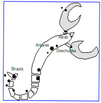Desde a mais remota antiguidade essa constelação foi apresentada pelos gregos, latinos árabes e persas pela figura de um escorpião. Segundo alguns autores a origem desse nome deve associar-se às pragas que assolavam o Egito quando o Sol se encontrava naquela região. O Equinócio de outono há 3000 anos a.C. localizava-se ai quando este asterismo foi instituído. Na Pérsia, Antares era uma das quatro estrelas reais, uma das guardiães do céu e, naquela época indicadora do outono. Os poetas gregos nos ensinavam que Scorpius foi o animal enviado por Diana para matar Órion, que intervinha em suas atividades de caçadora, mas ela nunca conseguia atingir sua meta, as estrelas de Órion desaparecem no Ocidente justamente quando o escorpião nasce no oriente.
TAURUS (Touro) : A mais antiga das constelações,
os babilônios a utilizavam para marcar o início do ano, pois o equinócio da primavera há 4000 a.C. localizava-se nesse asterismo.
Todos os antigos zodíacos mostram o seu inicio em Touro. O ano começava com o aparecer matinal das Plêiades na primavera, e seu
desaparecimento vespertino no outono indicava o fim do inverno. O aparecimento das Plêiades em novembro era saudado como a festa
dos mortos. Alguns povos da antiguidade como os caldeus e hebreus davam ao mês de novembro o nome de Plêiades.
No mais antigo de todos os zodíacos egípcios - o de Denderah, a constelação do Touro está associada a Osiris, que era o deus especial
do Nilo. O nascer das Hyades, principal aglomerado de Touro era associado à estação das chuvas, daí a origem do seu nome que significa
chover. A lenda grega relata que Júpiter enamorado de Europa teria se transformado em um Touro de pele branca, Europa ao ver esse
touro tão manso, não teve dúvidas em montar em seu dorso, este aproveitando-se da inocência da jovem, lança-se ao mar até atingir
Creta. Desde então brilha no céu como constelação para lembrar essa união feliz.
A mais antiga das constelações,
os babilônios a utilizavam para marcar o início do ano, pois o equinócio da primavera há 4000 a.C. localizava-se nesse asterismo.
Todos os antigos zodíacos mostram o seu inicio em Touro. O ano começava com o aparecer matinal das Plêiades na primavera, e seu
desaparecimento vespertino no outono indicava o fim do inverno. O aparecimento das Plêiades em novembro era saudado como a festa
dos mortos. Alguns povos da antiguidade como os caldeus e hebreus davam ao mês de novembro o nome de Plêiades.
No mais antigo de todos os zodíacos egípcios - o de Denderah, a constelação do Touro está associada a Osiris, que era o deus especial
do Nilo. O nascer das Hyades, principal aglomerado de Touro era associado à estação das chuvas, daí a origem do seu nome que significa
chover. A lenda grega relata que Júpiter enamorado de Europa teria se transformado em um Touro de pele branca, Europa ao ver esse
touro tão manso, não teve dúvidas em montar em seu dorso, este aproveitando-se da inocência da jovem, lança-se ao mar até atingir
Creta. Desde então brilha no céu como constelação para lembrar essa união feliz.
VIRGO (Virgem) : No Vale do Eufrates, onde
foram criadas as constelações, a da Virgem simbolizava a busca de Ishtar filha do céu e rainha das estrelas. Representada
com uma espiga na mão, constituía o símbolo da fertilidade.
Na mitologia grega era a imagem de Deméter a filha de Cronos e Rhea, deusa do trigo.
No Vale do Eufrates, onde
foram criadas as constelações, a da Virgem simbolizava a busca de Ishtar filha do céu e rainha das estrelas. Representada
com uma espiga na mão, constituía o símbolo da fertilidade.
Na mitologia grega era a imagem de Deméter a filha de Cronos e Rhea, deusa do trigo.